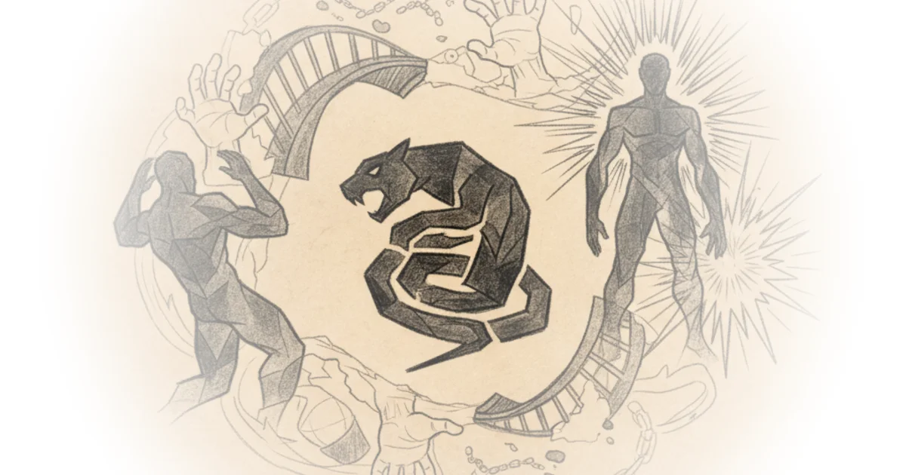

The 10 Best Movies of 2024
Commentary by Brian Edwards
Transcript excerpt on Like Stories of Old
let's not do that there's a great emotional hook right at the beginning of Rebel Rich that immediately gets you hating the villain and rooting for the good guy but instead of cashing that in right away director Jeremy son very effectively builds the tension by first exhausting every option that would have de-escalated the conflict oh I think he's on the Wikipedia page and so then when hero who is played very commandingly here by Aaron Pierce finally steps up to unleash his righteous Fury it feels more than earned it feels inevitable I don't think it's a Flawless movie but I had a lot of fun with this one it's just a solid story-driven action thriller and it's the first of many honorable mentions I have in this end of the year video in which I reflect back on my favorite movies of 2024 and discuss the 10 works that stood out the most to me according to my letter box I saw about a 100 movies this year not my personal best but still so far I felt like 2024 had a lot of movies that while not necessarily being instant Classics were nevertheless just really good movies like Edward Burger's conclave which I didn't think broke any new ground but which was still a well-crafted fusion between a contemplative reflection on faith and the twisty storytelling of a Dan Brown mystery box or a different man a great character study on self-hatred insecurity and misguided desires with a fantastic performance from Sebastian Stan I also really liked the promised land directed by Nikolai arel an old school historical epic about power Justice and honor set in the wild Danish heathlands and starring Matt Mickelson as a former Soldier turned potato farmer who gets caught up in a political conflict and speaking of potatoes if you're all into food then definitely go see the taste of things directed by Tren and hung a wonderful French movie about how love and food and the love for food can become entangled in this greater expression of human passion there are many more honorable mentions coming up but I'm going to spread those out over the rest of the video so that I won't bombard you with a long list of titles right at the beginning and so that we can jump straight into a discussion on the first of ...